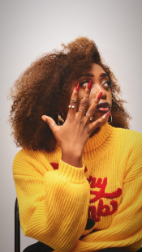
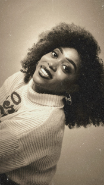

Twins Photography
Bienvenue chez Twins Photography, une entreprise jeune et dynamique fondée par deux soeurs juemelles passionnées par l'art de capturer des instants uniques. Bien que nouvellement arrivées dans le domaine, nous apportons une touche de créativité à chaque projet, notre mission est d'immortaliser vos plus beaux moments avec authenticité et émotion. Avec une approche personnalisée et un regard innovant, Twins Photography transforme chaque séance photo en une expérience unique et mémorable. Faites confiance à notre passion pour capturer la beauté de l'instant !
UN PROJET ? CONTACTEZ-NOUSNos dernières œuvres
_zoom.png)
_zoom.png)
_zoom.png)


_zoom.png)